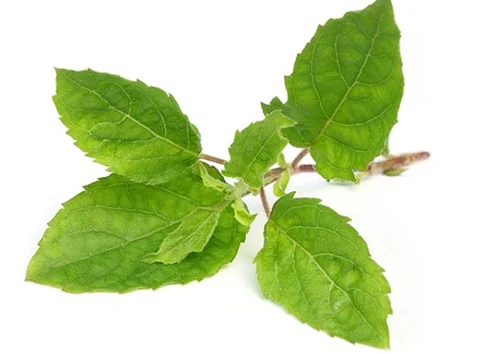
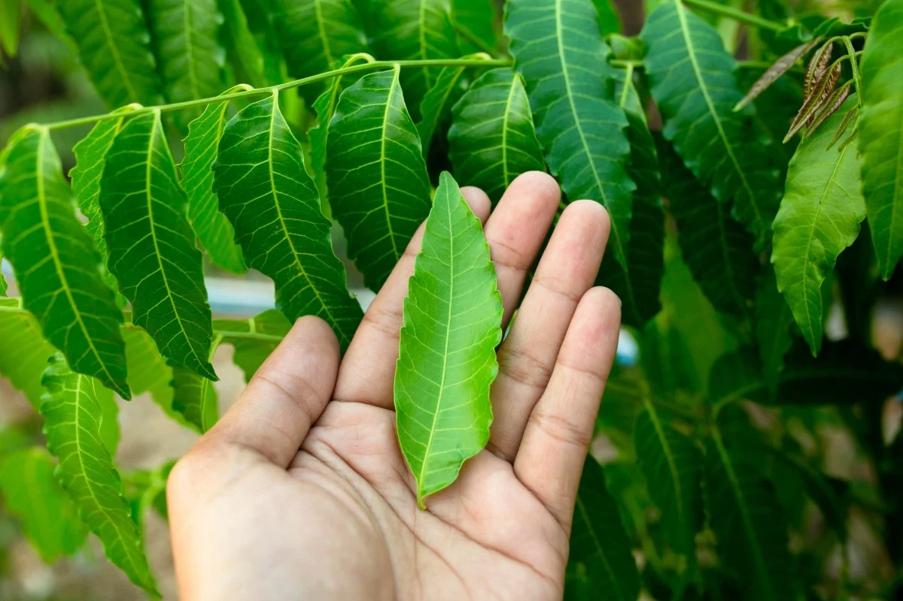
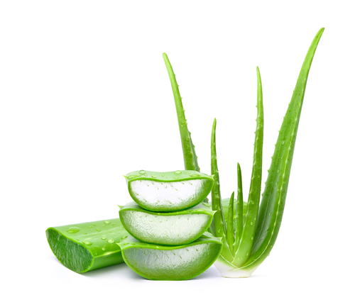
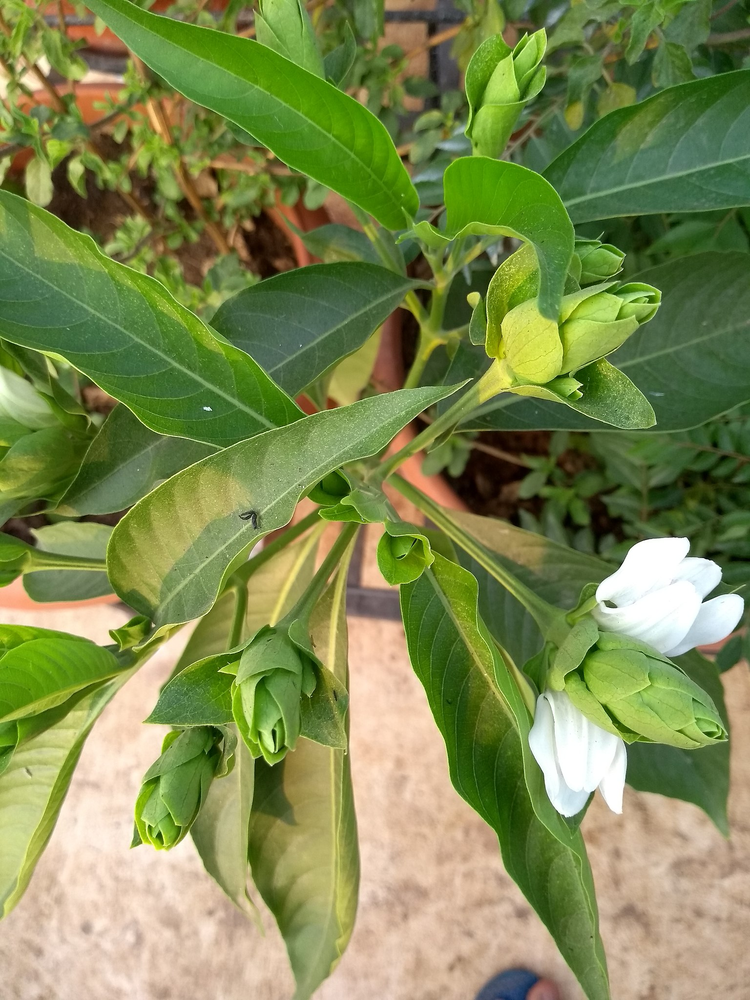
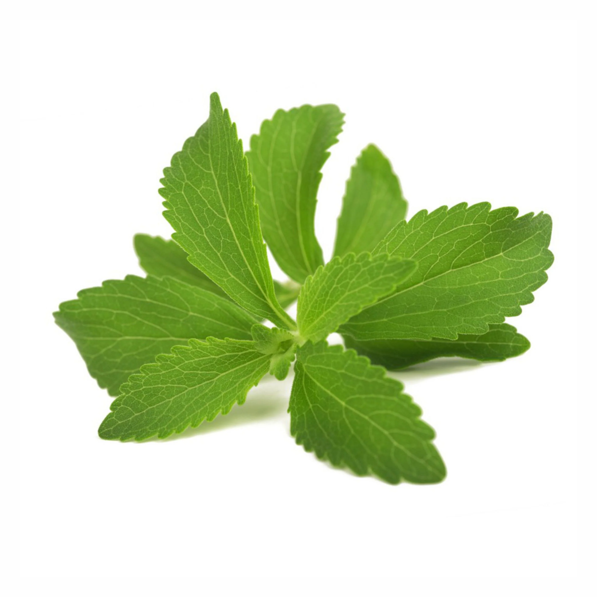

Index





Tulsi or Holy basil l is a widely known herb in the family Lamiaceae.
It is native to India and vastly cultivated throughout Southeast Asia.
Tulsi has proved to be highly effective in protecting our body from various infections and diseases of the liver, skin, kidney, etc.
Owing to its numerous health benefits, tulsi is rightly called the ‘Queen of Herbs’.
Health Benefits
- Tulsi is rich in Vitamin C and zinc.
- It thus acts as a natural immunity booster and keeps infections at bay.
- It has immense anti-bacterial, anti-viral and anti-fungal properties which protect us from a variety of infections.
- Tulsi has anti-bacterial and anti-viral properties which help to fight infections, thus reducing fever.
- The fresh juice of Tulsi taken with solid black pepper powder cures periodic fevers.
<
- Camphene, cineole and eugenol present in Tulsi help reduce cold and congestion in the chest.
- Tulsi contains compounds Ocimumosides A and B.
- These compounds reduce stress and balance the neurotransmitters serotonin and dopamine in the brain.
- Phytochemicals present in Tulsi have strong antioxidant properties.
- Thus, they help in protecting us from skin, liver, oral and lung cancers.
go to top
Neem (Azadirachta indica) is an evergreen tree with a well-earned reputation for being the most potent medicinal flora in the world.
The neem tree is known in Ayurveda as nature’s pharmacy.
The tree grows predominantly in the Indian subcontinent
But is now being cultivated in similar climates all over the world as people are beginning to recognize its usefulness.
Health Benefits
- Helps Destroy Cancerous Cells
- Helps Destroy Harmful Bacteria
- Almost everyone has some minor skin issues but if you wash your body with neem, it becomes clean and radiant.
- Drinking neem juice can help reorganize and reboot one’s digestive process.
- Neem is also available in the powdered form and has a good shelf life, which makes it ideal for carrying along while travelling.
- Applying a gel containing neem leaf extract to the teeth or using a neem mouthwash can reduce the amount of plaque on the teeth.
- A mild form of gum disease (gingivitis). Applying a gel containing neem leaf extract to the teeth or using a neem mouthwash can reduce gingivitis in some people.
- Treats Fungal Infections
- Useful in Detoxification
- Increases Immunity
- Insect & Mosquito Repellent
- Prevents Gastrointestinal Diseases
- Treats Wounds
go to top
Aloe vera is a popular medicinal plant that people have used for thousands of years.
Aloe vera, or Aloe barbadensis, is a thick, short-stemmed plant that stores water in its leaves.
It is best known for treating skin injuries, but it also has several other uses that could potentially benefit health.
Health Benefits
- It contains healthful plant compounds.
- It has antioxidant and antibacterial properties.
- It accelerates wound healing.
- It reduces dental plaque.
- It helps treat cancer sores.
- It reduces constipation
- It may improve skin and prevent wrinkles
- It lowers blood sugar levels
- It's Anti-Ageing.
- It fights Acne.
- It's Hydrating.
- It's Moisturising.
- It Boosts Digestion.
go to top
Adulsa plant, also known as Adusa, Vasaka, Vasa and Malabar nut, is known to have several medicinal properties,
which help in treating breathing problems, cold, cough, sore throats and bronchitis.
From providing relief in arthritis pain to treating blood-related diseases,
Adulsa leaves have several other benefits as well.
Health Benefits
- Purifies blood
- Provides relief from cough and cold
- Reduces joint pain and inflammation
- Treats Uremia
- Adulsa prevents the formation of clots in the arteries, further preventing heart block.
- It Prevents Sunburn.
- Wound Healing
- Remedies Cough And Cold
- Promotes Gut Health
- Heals Ulcers
- Relieves Pain And Inflammation
- Augments Skin Health
go to top
Stevia is a natural sweetener derived from the leaves of the stevia plant (Stevia rebaudiana).
As it has zero calories but is 200 times sweeter than table sugar,
it’s a popular choice for many people looking to lose weight and decrease sugar intake.
This sweetener has also been associated with several health benefits, including lower blood sugar and cholesterol levels.
Health Benefits
- Good for Diabetics
- Helps in Weight Control
- May Reduce the Risk of Pancreatic Cancer
- May Help to Reduce High Blood Pressure
- Stevia Does Not Cause any Allergy
- Aids Special group of People
- Fight Allergies
- Prevents Cancer
- Stevia is natural, unlike other sugar substitutes
- Get our sweet caffeine fixed without calories or artificial sweeteners.
- Easily Available